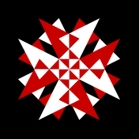

Création de motifs
60 natures, 6 niveaux de traits, un échiquier d'images à chaque croisement
Teinte

Accueil
Tirage
Impression
Unified Patterns
Galerie 884
Fond d'écran
Contact
À propos
Lexique
Articles
© 2026 Anibal Edelberto Amiot — Tous droits réservés
·
Créé en collaboration avec Claude
Hébergé par https://gk2.net – l'internet des créatifs